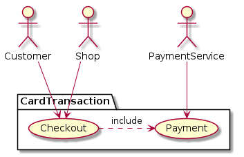

Class 5: Modelling with UML diagrams#
UML diagrams are used to illustrate broadly understood systems, such as architectures, state dynamics or workflows. They are many tools to draw them: those into graphic design may like drawing tools like diagrams.net, while developers should appreciate diagrams created from markup descriptions by PlantUML or by more simplistic Mermaid. It is worth looking into examples shared online, see in particular https://real-world-plantuml.com/ or https://www.planttext.com/. For more on UML modelling, see dedicated courses like here or here.
Example: Card Payment#
User stories are best illustrated with (high-level) use-case diagram, which visualize how actors interract with a system to accomplish some actions. Note that actors can be computer systems as well as human users.
The example below visualizes a “card transaction” process:

This was generated with the following PlantUML code snippet:
@startuml
actor Customer
actor Shop
actor PaymentService
package CardPayment {
usecase "Checkout" as UC1
usecase "Payment" as UC2
UC1 .> UC2 :include
}
Customer --> UC1
Shop--> UC1
PaymentService --> UC2
@enduml
Example: GitHub Game#
As an exmple, let’s model an educational game which challenges users with questions about coding practices based on Github repositories.
To this end, we create the following sequence diagram showing interaction steps (test it live here):
The corresponding PlantUML code snippet is
@startuml
autonumber
actor User as user
participant "Application" as app
participant "GitHub" as github
skinparam actorStyle awesome
loop until user ends
user -> app: challenge request
app -> github: sample a repo
github -> app: return the repo information
app -> user: puzzle
note left of app: question about filetypes/locations
user -> app: answer
app -> user: evaluation
end
@enduml
A very similar diagram is created by Mermaid, with slightly different syntax (test it live here).
sequenceDiagram
autonumber
actor user as User
participant app as Application
participant github as GitHub
loop until user ends
user ->> app: challenge request
app ->> github: sample a repo
github ->> app: return the repo information
app ->> user: puzzle
note left of app: question about filetypes/locations
user ->> app: answer
app ->> user: evaluation
end
Example: Web App by Model-View-Controller#
The example below illustrates the application of the Model-View-Controller framework which separates interface and business logic. To do so, it uses elements with distinguished roles - such as boundary, control or entity objects, called stereotypes. The system depicted is a web application which visualizes data scrapped on a daily basis from web resources.
The code snipppet is shown below
@startuml
actor User as user
boundary Dashboard as view
control Logic as logic
entity Database as db
control Scrapper as scrape
entity WebSources as web
skinparam actorStyle awesome
activate db
activate view
loop daily
scrape -> web: get
activate scrape
web --> scrape: page
scrape -> scrape: process
note right of scrape: parsing
scrape --> db: upload data
deactivate scrape
end
user -> view: information request
activate user
view -> logic: pass request
activate logic
logic -> db: read
db --> logic: data
logic -> logic: process
note right of logic: computation
logic --> view: response
deactivate logic
view -> user: update
note left of view: notify/refresh
deactivate user
@enduml
and renders as follows